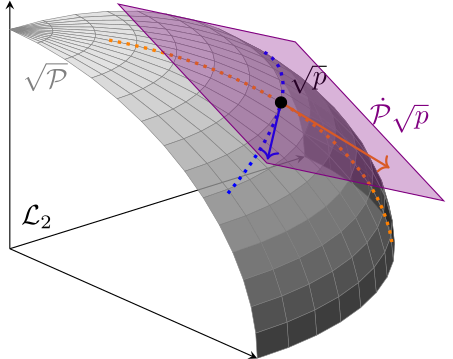
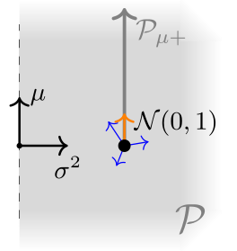
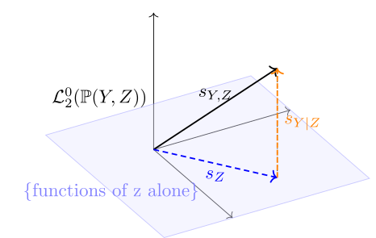
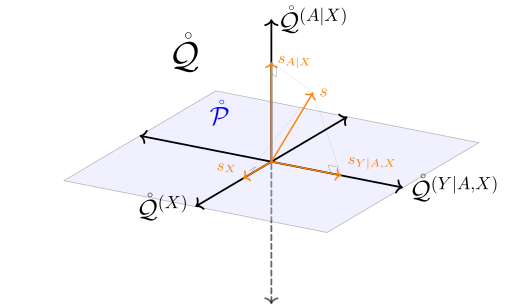
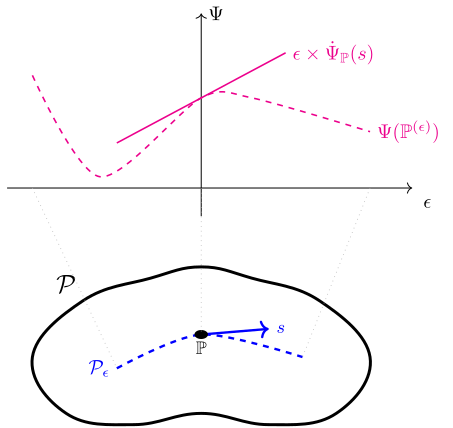
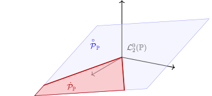
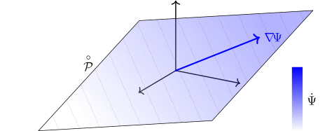
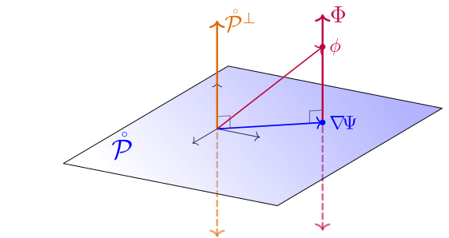
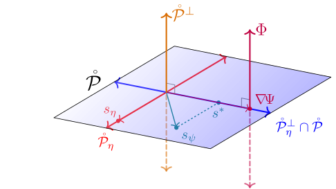

2 Efficiency for RAL Estimators
In Section 1.1 we defined asymptotic linearity (AL) and discussed why AL estimators are nice: they are asymptotically unbiased, are easy to do inference for, and can be (asymptotically) compared by looking at their influence functions. In Chapter 1 we argued that we should further restrict the class of desirable estimators to those that are regular so that bad finite-sample behavior can’t be hidden in the asymptotic comparisons. In this chapter we will establish the central result of efficiency theory: in any model where the estimand varies smoothly enough over the different distributions, there is a best-possible regular asymptotically linear (RAL) estimator.
Really what we’ll prove is that there is a best-possible influence function: multiple estimators may have that influence function but by virtue of that fact they will behave similarly in large-enough samples. We call the best-possible influence function the efficient influence function (EIF). The EIF sets a limit on how good any RAL estimator can be at estimating some estimand in a some model. If you have a RAL estimator with that influence function, you can rest assured that it is the best you can do (asymptotically).
In this chapter we will prove our central result and discuss some important implications. In the next chapter we’ll show how to derive the EIF in the most common scenarios. After that, in the last part of the book, we will demonstrate how to use knowledge of the EIF to construct efficient estimators.
2.1 Characterizing Influence Functions
Not every possible function corresponds to a valid RAL estimator of an estimand in a particular statistical model. Clearly it would be wonderful if we could find a RAL estimator with \(\phi(z) = 0\) because this estimator would have no variance at all in large samples. But if that were possible, statistics would be easy. So \(\phi(z) = 0\) must not be an influence function for any sensible estimand in any sensible model. So, for a given estimand and statistical model, what functions are influence functions of RAL estimators, and what functions aren’t?
We already know that any regular estimator by definition behaves in a particular way asymptotically along a quickly-converging sequence of distributions. Remarkably, it turns out that asymptotic linearity also implies specific asymptotic behavior along a subset of these sequences.
This is remarkable because asymptotic linearity is a pointwise property: it describes only what happens if the estimator is evaluated with more and more data sampled from the same distribution. By itself it says nothing about what would happen if we also changed that distribution while letting \(n\) grow. But if we take into account differentiability along the path suddenly we can understand that changing pathwise behavior. Moreover the pathwise behavior depends crucially on what the score \(s\) is for the path in question: notice that the mean of the limiting distribution is \({\mathbb{P}}s\phi\).
The benefit of knowing this is that now we can compare to the definition of regularity (Definition 1.6), which also tells us how the estimator behaves along sequences including the kind we considered in Theorem 2.1, but this time in a way that does not depend on what the score is for the path:
\[ \sqrt{n}\left( \hat\Psi({\mathbb{P}}^{(\epsilon_n)}_n) - \Psi({\mathbb{P}}^{(\epsilon_n)}) \right) \rightsquigarrow \mathbb D . \]
Recall that \(\mathbb D\) is some fixed distribution that by definition is not allowed to depend on the sequence or path. If we let \(\epsilon_n = 0\) (a valid choice), the resulting sequence is \(\sqrt{n}\left( \hat\Psi({\mathbb{P}}_n) - \Psi({\mathbb{P}}) \right)\) which converges to \(\mathsf{N}(0,{\mathbb{P}}\phi^2)\) when the estimator is asymptotically normal (Definition 1.2). Since the limiting distribution \(\mathbb D\) must be the same across all paths for the estimator to be regular at \({\mathbb{P}}\), it must be that \(\mathbb D = \mathsf{N}(0,{\mathbb{P}}\phi^2)\).
Therefore, combining this and Theorem 2.1, for any estimator that is both regular and asymptotically linear,
\[ \begin{aligned} \sqrt{n}\left( \hat\Psi({\mathbb{P}}^{(\epsilon_n)}_n) - \Psi({\mathbb{P}}) \right) &\rightsquigarrow \mathsf{N}({\mathbb{P}}[s\phi], {\mathbb{P}}\phi^2) \\ \sqrt{n}\left( \hat\Psi({\mathbb{P}}^{(\epsilon_n)}_n) - \Psi({\mathbb{P}}^{(\epsilon_n)}) \right) &\rightsquigarrow \mathsf{N}(0,{\mathbb{P}}\phi^2) \end{aligned} \]
for any sequences \({\mathbb{P}}^{(\epsilon_n)}\) along a differentiable path with \(\epsilon_n = c_n n^{-1/2}\) and \(c_n \to 1\). Comparing the left- and right-hand sides above, the only way that both asymptotic statements can be true simultaneously is if
\[ \sqrt n \left( \Psi({\mathbb{P}}^{(\epsilon_n)}) - \Psi({\mathbb{P}}) \right) \to {\mathbb{P}}[s\phi]. \]
Because \(\epsilon_n \sim 1/\sqrt n\) and the choice of differentiable path was arbitrary, this implies the following result.
At a glance it seems like the limit \(\lim_{\epsilon\to 0} \frac{\Psi({\mathbb{P}}^{(\epsilon)}) - \Psi({\mathbb{P}}^{(0)})}{\epsilon}\) should depend on the particular path \({\mathcal{P}}_\epsilon\). If this were the case it would be more appropriate to abbreviate it with notation like \(\dot\Psi_{\mathbb{P}}({\mathcal{P}}_\epsilon)\). However, the notation \(\dot\Psi_{\mathbb{P}}(s)\) is justified by the fact that the limit must be the same value \({\mathbb{P}}s \phi\) for any two paths \({\mathcal{P}}_\epsilon\) and \({\mathcal{P}}'_\epsilon\) that have the same score \(s\). That is, the limit is not really a function of the particular path \({\mathcal{P}}_\epsilon\), but a function of the score \(s\).
Theorem 2.2 is an astounding result because it connects two seemingly unrelated things: the left-hand side is the rate of change in the estimand as we move the underlying distribution along a path. That has nothing to do with any estimator. The right-hand side is some measure of the “angle” between the influence function of an estimator and the direction of the path. By assuming regularity and asymptotic normality we have managed to connect these two seemingly unrelated quantities. What this means about the set of possible influence functions may still be unclear, but for the moment I hope you can appreciate the result as a very interesting connection nonetheless!
2.2 Tangent Sets
Theorem 2.2 holds simultaneously for all differentiable paths in the model through \({\mathbb{P}}\) (and all their induced scores). To unlock the important insights from the theorem we therefore need to be able to refer to that set of scores.
Very often the tangent set is a closed vector space (i.e. it is closed under sums, scaling, and limits; see Definition B.1). When this is the case, some authors refer to the tangent set as the tangent space. If the tangent set is not already a closed vector space, the term “tangent space” usually refers to the linear closure of the tangent set (all linear combinations of scores and their \(\mathcal{L}_2\)-limits).

Looking at Figure 2.1, it’s clear why we call this the the “tangent” set: the plane \({\dot{{\mathcal{P}}}}_{\mathbb{P}}\sqrt p\) is tangent to the surface of the root-model \(\sqrt{{\mathcal{P}}}\) at the density \(\sqrt p\). That is also why we use the evocative dot notation for the tangent set: \({\dot{{\mathcal{P}}}}_{\mathbb{P}}\sqrt p\) contains all of the derivatives \(\overset{\scriptscriptstyle\bullet}{\sqrt{p_\epsilon}}\). Although the picture in fact shows the root-model and tangent set times the root density, we often say informally that the tangent set \({\dot{{\mathcal{P}}}}_{{\mathbb{P}}}\) itself is “tangent” to the model \({\mathcal{P}}\) at the distribution \({\mathbb{P}}\).
Since it’s useful to think of scores as directions we can move away from \({\mathbb{P}}\) in the model, the tangent set is simply the set of all such directions. If a model is “large” in a neighborhood of \({\mathbb{P}}\) in the sense that there are many directions you can go in and stay in the model, then the tangent set will be large. If a model is “small” around \({\mathbb{P}}\) then the tangent set will be small. The tangent set clearly depends on \({\mathbb{P}}\), as we will see in some examples, which is why we use the notation \({\dot{{\mathcal{P}}}}_{\mathbb{P}}\). However, we will often write \({\dot{{\mathcal{P}}}}\) without the subscript when \({\mathbb{P}}\) is clear from context or is arbitrary in order to clear up some clutter.
Example 2.1 Consider the model \({\mathcal{P}}= \{\mathsf{N}(\mu,\sigma^2): \mu \in \mathbb{R}, \sigma^2 > 0\}\) with densities \(p_{\mu,\sigma^2}(z)\) and the point \({\mathbb{P}}= \mathsf{N}(0,1)\) with density \(p(z) = (2\pi)^{-1/2} e^{-{z^2}/{2}}\) of the standard normal. Since this is a two-dimensional parametric model, the tangent set at \(p\) is all linear combinations of
\[ \begin{aligned} s_\mu(z) &= \left. \frac{\partial p_{\mu,\sigma^2}(z)}{\partial \mu} \right|_{\mu=0, \sigma^2=1} = z \\ s_{\sigma^2}(z) &= \left. \frac{\partial p_{\mu,\sigma^2}(z)}{\partial \sigma^2} \right|_{\mu=0, \sigma^2 =1} = \frac{z^2 -1}{2} \\ \end{aligned} \]
Thus in this case \({\dot{{\mathcal{P}}}}\) is a two-dimensional set of functions.

If we instead restricted the model to be \({\mathcal{P}}_\mu = \{\mathsf{N}(\mu,1): \mu \in \mathbb{R}\}\) by fixing \(\sigma^2 =1\) (presume we knew this a-priori), then the tangent set would be all linear combinations of \(s_\mu\) alone, i,e, \(\{cs_\mu: c \in \mathbb{R}\}\), a one-dimensional subset of the tangent set for the larger model.
Lastly, if we considered the even smaller model \({\mathcal{P}}_{\mu+} = \{\mathsf{N}(\mu,1): \mu \ge 0\}\), then the point \({\mathbb{P}}= \mathsf{N}(0,1)\) would be on the “edge” of this model. Consequently there is no differentiable path that goes in the “negative \(\mu\)” direction from \({\mathbb{P}}\) and therefore the tangent set would be restricted to \(\{cs_\mu: c \ge 0\}\), again a subset of the tangent space in the larger parent model. On the other hand, if we considered the point \({\mathbb{P}}= \mathsf{N}(1,1)\) in this same model, the tangent space set would be \(\{cs_\mu: c \in \mathbb{R}\}\), the same as in the larger model where \(\mu\) is allowed to be negative. This is because \(\mathsf{N}(1,1)\) is in the “interior” of the restricted model, so the mean can be decreased without any problem.
This example demonstrates why the tangent set is specific to a particular point in a particular model. The notation \({\dot{{\mathcal{P}}}}_{{\mathbb{P}}}\) makes the model dependence very explicit and that is why I prefer it to something more cumbersome like \(\mathcal S_{{\mathcal{P}}, {\mathbb{P}}}\). The tangent set depends crucially on where the point is within the model because that affects what directions it is legal to move in while remaining in the model (recall that paths are subsets of the model). The shape and size of the tangent set is determined entirely by the local character of the model at \({\mathbb{P}}\). We saw in the example above that the tangent set at \(\mathsf{N}(0,1)\) became smaller if we restricted the mean in the normal model to be non-negative, but at \(\mathsf{N}(1,1)\) the tangent set was unaffected by that restriction. There are many more examples of specific tangent sets in Chapters 3 and 4 of Bickel et al. (1993) but for now we can proceed with the intuition we have without getting bogged down in details.
In Definition 2.1 we noted that \({\dot{{\mathcal{P}}}}_{{\mathbb{P}}} \subseteq \mathcal{L}_2^0\left(\mathbb{P}\right)\) (recall we defined this as the set of \(\mathcal{L}_2\left(\mathbb{P}\right)\) functions with \({\mathbb{P}}\)-mean zero). Some models are so “large”, however, that the inclusion is actually an equality. If the model is big enough (locally), you can move in any direction.
Example 2.2 Let \(\mathcal p\) be the set of all distributions of continuous random variables (i.e. distributions with standard densities) and pick some point \({\mathbb{P}}\in {\mathcal{P}}\). For any bounded function \(s \in \mathcal{L}_2^0\left(\mathbb{P}\right)\) we can construct the convex path \(p_\epsilon= (1+ \epsilon s) p_0\) (bounding \(s\) is required so that \(p_\epsilon\) remains a density and the mean-square and pointwise scores coincide). As we saw in Example 1.8, \(s\) is the score for such a path at \({\mathbb{P}}\) and thus the tangent set at that point includes at least all bounded functions \(s \in \mathcal{L}_2^0\left(\mathbb{P}\right)\).
This is good enough for intuition, but to remove the boundedness condition on the scores and formally extend to all \(\mathcal{L}_2^0\left(\mathbb{P}\right)\) we can instead use the paths \(p_\epsilon= \frac{e^{\lambda(\epsilon s)}}{\int e^{\lambda(\epsilon s(z))} p_0(z) \mathop{}\!\mathrm{d}z} p_0\) with \(\lambda(t) = 2(1+e^{-2t})^{-1}\). These paths also have scores \(s\) and generate valid densities for any \(s \in \mathcal{L}_2^0\left(\mathbb{P}\right)\). For details see Example 1 in Chapter 3 of Bickel et al. (1993).
We give this kind of model its own name.
This is the kind of model we will work with most often for the remainder of this book. Locally nonparametric models are popular in practice because they enforce essentially no assumptions on the data-generating distribution. In fields like medicine, economics, or business, we often cannot say much about the world with great confidence (the distribution of variables, the functional form of their relationships, etc.). We will see shortly that the larger the model is, usually the more uncertainty we get in the final estimate. This makes sense: the more assumptions you’re willing to make, the more confident you can be of an estimate. But if you use a model that is too small (i.e. assume things that are not actually true) then the estimate may be biased and confidence intervals will typically underestimate the true sampling uncertainty. Working with a locally nonparametric model is therefore a maximally robust approach, or at worst conservative.
2.2.1 Factoring
There are, of course, many practical situations where we do know something. For example, in our familiar covariate-treatment-outcome \((X,A,Y)\) setup, if the treatment is allocated randomly by coin flip, then we know for a fact that \({\mathbb{P}}(A=1|X) = 1/2\). This is an important restriction on the model. Due to the ability to experimentally control treatment assignments, there are many cases in causal inference where one or more factors of a probability distribution are known exactly, but nothing is certain about the others. Thankfully, it’s not hard to figure out the tangent set in such models.
To simplify things, we’ll work in a generic model defined over two variables \((Y,Z)\) (you can think of \(Z=(A,X)\) if you please). We’ll also presume again that all our distributions have densities and that the pointwise definition of the scores coincides with the mean-square derivative definition to facilitate the explanation. All of the results below also hold in the mean-square sense of scores in models without densities but everything is more cumbersome to prove without adding any intuition. I’ve put sketches of those proofs into boxed-off sections that you can safely ignore.
Since every distribution \({\mathbb{P}}(Y,Z)\) can be factored into \({\mathbb{P}}(Y,Z) = {\mathbb{P}}(Y|Z) {\mathbb{P}}(Z)\), every differentiable path of distributions \({\mathbb{P}}^{(\epsilon)}(Y,Z)\) induces a path of marginal distributions \({\mathbb{P}}^{(\epsilon)}(Z)\) and a path of conditional distributions \({\mathbb{P}}^{(\epsilon)}(Y|Z)\). Let’s pick some arbitrary path with score \(s\). We can take derivatives of the log-likelihoods along the induced conditional and marginal paths to obtain scores (in terms of the pointwise definition):
\[ \begin{aligned} s_Z(z) &= \partial_0 \log p_\epsilon(z) \\ s_{Y|Z}(y,z) &= \partial_0 \log p_\epsilon(y|z) \end{aligned} \]
where I’m abbreviating the operator \(\left. \frac{\mathop{}\!\mathrm{d}}{\mathop{}\!\mathrm{d}\epsilon} \right|_{\epsilon=0} (\cdot)\) with \(\partial_0 (\cdot)\). When the meaning is clear from context I’ll abuse notation a bit and write \(s(z)\) for \(s_Z(z)\) and similarly \(s(y|z)\) for \(s_{Y|Z}(y,z)\), the same way as is usually done for marginal and conditional density functions. If we iterate this over all differentiable paths and collect the resulting scores we generate what I’ll call the marginal and conditional tangent sets \({\dot{{\mathcal{P}}}}_{\mathbb{P}}(Z)\) and \({\dot{{\mathcal{P}}}}_{\mathbb{P}}(Y|Z)\).
Let’s see how these marginal and conditional scores are related to the joint score for a given path. First off, because
\[ \log p_\epsilon(z,y) = \log (p_\epsilon(y|z) p_\epsilon(z)) = \log p_\epsilon(y|z) + \log p_\epsilon(z), \]
when we apply \(\partial_0\) to both sides we get
\[ s(y,z) = s(y|z) + s(z) \]
so the joint score is simply the sum of the marginal and conditional scores. But we can further characterize these scores in terms of the joint score. By the chain rule, \(\partial \log p_\epsilon= \frac{\partial p_\epsilon}{p_\epsilon}\), so evaluating at \(\epsilon= 0\) and shifting terms around gives
\[ \partial_0 p_\epsilon= p_0 \partial_0 p_\epsilon= p_0 s. \tag{2.1}\]
This is true for the joint, conditional, and marginal densities/scores. If we start with this equation in terms of the joint density/score and integrate with respect to \(y\) on both sides we have
\[ \int \partial_0 p_\epsilon(y,z) \mathop{}\!\mathrm{d}y = \int p_0(y,z) s(y,z) \mathop{}\!\mathrm{d}y. \]
On the left-hand-side, if we are allowed to exchange integration w.r.t \(z\) and differentiation w.r.t. \(\epsilon\) (formally this is possible under mild restrictions on the model), then we get \(\partial_0 \int p_\epsilon(y,z) \mathop{}\!\mathrm{d}y = \partial_0 p_\epsilon(z) = p_0(z) s(z)\) by applying Equation 2.1 to the marginal \(p_\epsilon(z)\). Dividing both sides of the above by \(p_0(z)\) gives
\[ s(z) = \int \frac{p_0(y,z)}{p_0(z)} s(y,z) \mathop{}\!\mathrm{d}y = \int p(y|z) s(y,z) \mathop{}\!\mathrm{d}y = \mathbb{E}[s(Y,Z)|Z=z] \]
and therefore \(s(y|z) = s(y,z) - \mathbb{E}[s(Y,Z)|Z=z]\) since the conditional and marginal scores sum to the joint.
We now have explicit formulations of the marginal and conditional scores in terms of the joint score. Besides their relation to the joint score, these scores also have some interesting properties. You may recall from Definition 1.5 that \({\mathbb{P}}s = 0\), i.e. \(\mathbb{E}[s(Y,Z)] = 0\). The conditional and joint score obey similar conditions:
\[ \begin{aligned} \mathbb{E}[s(Z)] &= 0 \\ \mathbb{E}[s(Y|Z)| Z] &= 0. \\ \end{aligned} \]
The first identity comes from the explicit definition of \(s(z)\) because \(\mathbb{E}_Z[s(Z)] = \mathbb{E}_Z[\mathbb{E}_Y[s(Y,Z)|Z]] = \mathbb{E}[s(Y,Z)] = 0\) by total expectation and since the joint score is mean zero. The second comes from
\[ \begin{aligned} \mathbb{E}_Y[s(Y|Z)| Z] &= \mathbb{E}_Y[s(Y,Z) - \mathbb{E}_Y[s(Y,Z)|Z] | Z] \\ &=\mathbb{E}_Y[s(Y,Z)|Z]- \mathbb{E}_Y[s(Y,Z)|Z] \end{aligned} \]
We can also show that the marginal and conditional score functions are orthogonal to each other in \(\mathcal{L}_2\left(\mathbb{P}\right)\). Recall that two functions are orthogonal if their inner product is zero and that the \(\mathcal{L}_2\left(\mathbb{P}\right)\) inner product of two functions is the expectation of their product (see Appendix B). The expected value of the product of the conditional and marginal scores is
\[ \mathbb{E}[s(Z)s(Y|Z)] = \mathbb{E}[\mathbb{E}[s(Y,Z)|Z] (s(Y,Z) - \mathbb{E}[s(Y,Z)|Z] )]. \]
Abbreviating \(S = s(Y,Z)\), by total expectation, \(\mathbb{E}[\mathbb{E}_S[S|Z] S] = \mathbb{E}_Z[\mathbb{E}_S[\mathbb{E}_S[S|Z] S | Z]] = \mathbb{E}_Z[\mathbb{E}_S[S|Z] \mathbb{E}_S[ S | Z]]\) so the above is zero.
This is actually a general fact about conditional expectation that is used in many places throughout probability theory: a random variable minus its conditional expectation is orthogonal to that conditional expectation. In fact, the conditional expectation \(\mathbb{E}[f(Y,Z)|Z]\) of a random variable \(f(Y,Z)\) is precisely its orthogonal projection onto the subspace spanned by all \(\mathcal{L}_2\left(\mathbb{P}\right)\) functions of \(Z\) alone: the best possible \(\mathcal{L}_2\left(\mathbb{P}\right)\) approximation of \(f(y,z)\) that can be attained with functions of \(z\). This is illustrated in Figure 2.3.

Let’s summarize all these results.
Given this characterization, it’s easy to derive the tangent set of a model that has a restricted factor. In a model with a restricted factor, paths can only change the other factors and the scores are the “directions” that change only the non-restricted factors. For example if \(p(z)\) is fixed in the model but \(p(y|z)\) is free, then the scores are \(s(y,z) = s(y|z) + 0\), i.e. the \(z\)-component \(s(z)=0\) is fixed at \(0\) so as to not change the fixed marginal density \(p(z)\).
Example 2.3 (Tangent space for a randomized trial) Let’s return to our simple randomized trial example. The variables are \((Y,A,X)\) (outcome, treatment, covariates) and we know nothing about the outcome mechanism \({\mathbb{P}}(Y|A,X)\) or the distribution of the covariates \({\mathbb{P}}(X)\), but since the study is randomized we know that \({\mathbb{P}}(A=1|X) = {\mathbb{P}}(A=1) = \frac{1}{2}\). Let’s call the model of all such distributions \({\mathcal{P}}\) and let’s use \(\mathcal Q\) to describe the totally nonparametric model where nothing is known about the treatment distribution so that \(\mathring{\mathcal Q}_{\mathbb{P}}= \mathcal{L}_2^0\left(\mathbb{P}\right)\)
By two applications of Theorem 2.4, we can split up the tangent set of the nonparametric model at a point \({\mathbb{P}}\) (omitting subscripts) into
\[ \begin{aligned} \mathring{\mathcal Q} &= \mathring{\mathcal Q}^{(Y|A,X)} \oplus \mathring{\mathcal Q}^{A,X} \\ &= \mathring{\mathcal Q}^{(Y|A,X)} \oplus \mathring{\mathcal Q}^{A|X} \oplus \mathring{\mathcal Q}^{X} \end{aligned} \]
where the three subspaces are orthogonal to each other. In the randomized trial model \({\mathcal{P}}\), the \(A|X\) distribution is fixed and all scores are changing either the distributions of \(Y|A,X\) or \(X\), or both. Thus
\[ {\mathring{{\mathcal{P}}}}= \mathring{\mathcal Q}^{(Y|A,X)} \oplus \mathring{\mathcal Q}^{(X)} \\ \]
as shown in Figure 2.4.

2.3 Pathwise Differentiability
Now that we understand a bit more about the set of all scores we can return to the central identity above (definition Theorem 2.2). By comparing the asymptotic behavior while moving quickly along differentiable paths implied by regularity to the behavior implied by asymptotic linearity, we deduced that any RAL estimator (with influence function \(\phi\)) satisfies
\[ \dot\Psi_{\mathbb{P}}s = {\mathbb{P}}s\phi \]
for any differentiable path through \({\mathbb{P}}\) with score \(s\). In other words, that equality is satisfied for all scores \(s \in {\dot{{\mathcal{P}}}}_{\mathbb{P}}\), the tangent set of the model \({\mathcal{P}}\) at the distribution \({\mathbb{P}}\).
Let’s dig into the left-hand term:
\[ \dot\Psi_{{\mathbb{P}}} (s) \overset{\mathrm{def}} = \lim_{\epsilon\to 0} \frac{\Psi({\mathbb{P}}^{(\epsilon)}) - \Psi({\mathbb{P}}^{(0)})}{\epsilon} = \left. \frac{\mathop{}\!\mathrm{d}}{\mathop{}\!\mathrm{d}\epsilon} \right|_{\epsilon=0} \Psi({\mathbb{P}}^{(\epsilon)}) . \]
For any fixed path this is a standard, vanilla derivative of a one-dimensional function of \(\epsilon\). It measures the (instantaneous) rate of change of the estimand as we shift the underlying distribution along the path away from \(\epsilon=0\). This is illustrated in Figure 2.5.

However, that slope is generally different depending on the path one chooses. There may be paths along with the estimand is increasing rapidly, paths along which it is decreasing, and paths along which it is constant. Moreover if you “accelerate” the speed at which a path goes by multiplying the score by some value \(c >1\), the derivative will also be magnified. That is why we write \(\dot\Psi_{{\mathbb{P}}}(s)\) as a function of \(s\), the “direction” (and “speed”) of the path. Since the slope is taken at \(\epsilon=0\), the only thing that matters is the immediate direction of the path at \({\mathbb{P}}\), i.e. the score \(s\). The instantaneous rate of change of the estimand along two different paths with the same score will be the same. Because it is a derivative along a path, we aptly call the function \(s \mapsto \dot\Psi_{\mathbb{P}}(s)\) mapping from \({\dot{{\mathcal{P}}}}_{\mathbb{P}}\) to \(\mathbb{R}\) the pathwise derivative of the estimand \(\Psi\) at the distribution \({\mathbb{P}}\) in the model \({\mathcal{P}}\).
The value of the pathwise derivative in any direction also depends on the point \({\mathbb{P}}\) at which we take the derivative, which is why we write \(\dot \Psi_{\mathbb{P}}\) with the subscript. In what follows we’ll often drop that subscript and just write \(\dot\Psi\) when \({\mathbb{P}}\) is clear from context or is arbitrary.
The identity \(\dot\Psi_{\mathbb{P}}(s) = {\mathbb{P}}s\phi\) says that the slope \(\dot\Psi_{{\mathbb{P}}}(s)\) may be found by taking the inner product of \(s\) with any influence function \(\phi\) of a RAL estimator. In fact, it doesn’t matter which RAL estimator, if there are multiple: the result must be the same. We’ll return to this point in the next section but we are actually getting ahead of ourselves because we are assuming there is a RAL estimator. The argument for Theorem 2.2 only established a condition that must be met by any RAL estimator, not that such an estimator exists. In fact, the result implies something about when RAL estimators can exist.
Notice that on the right-hand side, \({\mathbb{P}}s \phi\) is an inner product. Seen as a function \(s \mapsto {\mathbb{P}}s\phi\) acting on the tangent set \({\dot{{\mathcal{P}}}}_{\mathbb{P}}\), the inner product is a bounded (i.e. continuous) linear functional (see Definition B.6 and Example B.7). Informally, a small change in the input score must always translate to a small change in the inner product with the fixed function \(\phi\). Since this inner product is equal to the pathwise derivative, that implies that the pathwise derivative must also be linear and continuous in the same sense: if we look at two paths that go in similar directions, the rate of change of the estimand must be similar on those paths.
The interesting thing is that the pathwise derivative has nothing to do with the estimator: it is defined purely by the model \({\mathcal{P}}\), the distribution \({\mathbb{P}}\) of interest within it, and the estimand \(\Psi\). The pathwise derivative either exists and is linear and continuous across scores or it isn’t. If it isn’t a continuous linear functional, then it’s not possible for it to be equal to any inner product. But since that equality must hold for any RAL estimator, if the pathwise derivative is not a continuous linear functional, then there cannot be any RAL estimator for that estimand in that model in the first place.
It’s sometimes helpful to think of the pathwise derivative as the best continuous, linear approximation to \(\Psi({\mathbb{P}})\) at the point \({\mathbb{P}}\), the same way that a tangent plane locally approximates the surface of a real-valued function of two or more variables. In this analogy, the tangent plane should itself be thought of as a function (a continuous and linear one) defined on the same variables.
A pathwise-differentiable estimand “varies smoothly” over the model the same way that a ordinary function with a continuous derivative has no kinks. At any point of a kink or discontinuity in the estimand, no estimator can be regular.
The examples in Exercise 2.2 are contrived. More often the types of “kinks” or discontinuities that cause problems are difficult to visualize in lower-dimensions. It’s not as if the value of most practically interesting non-differentiable estimands changes suddenly as we move along a single differentiable path. The fact that the path is differentiable means that the densities change smoothly as we walk in that fixed direction and that usually implies smooth behavior of the estimand along a given path.
The kinks are sometimes only visible “rotationally”. I like to imagine standing at a point \({\mathbb{P}}\) on the “surface” \(\Psi({\mathbb{P}})\) and looking in some direction: I imagine seeing how steep the ascent or descent is in whatever direction I look. The problem with most practically interesting estimands that are not differentiable isn’t that there is a discontinuity or kink in any given direction, it’s that no matter what direction you look at, there is always another direction where the slope is steeper. But an estimand is pathwise differentiable at a point in a model only if there is a “direction of maximum slope” away from that point. In infinite dimensions, kinks occur in this “rotational” sense more often than they occur in the more familiar one-dimension sense.
Example 2.4 Let \(\mathcal P\) be all distributions of a continuous variable \(Z\). Let’s say that our goal is to estimate the value of the density function of \(z\) at the point \(z=0\). There generally isn’t a good motivation for wanting to know this, it’s just a simple example that illustrates ideas that apply identically to more complicated estimands.
We’ll show that there is no RAL estimator of the density at a point by establishing that the pathwise derivative is not bounded over the tangent set \({\dot{{\mathcal{P}}}}_{\mathbb{P}}\) (at any \({\mathbb{P}}\)). The intuition is that we can find a path that comes very, very close to modifying the density only at the point \(z=0\). In other words, we can modify the estimand by arbitrary amounts essentially without changing the overall density.
Fix a distribution \({\mathbb{P}}\). Since the model is nonparametric, the tangent set \({\dot{{\mathcal{P}}}}_{\mathbb{P}}\) is all of \(\mathcal{L}_2^0\left(\mathbb{P}\right)\). Since that’s the case, any zero-mean \(\mathcal{L}_2\left(\mathbb{P}\right)\) function can be a score.
Define the sequence of probabilities \(t_n = {\mathbb{P}}\{-1/n \le Z \le 1/n\}\). Since these are probabilities of smaller and smaller sets over a continuous random variable they must shrink to zero.
We’ll consider a sequence of scores
\[ s_n(z) = \frac{1\left(-\frac{1}{n} \le z \le \frac{1}{n}\right) - t_n}{\sqrt{t_n(1-t_n)}} \]
The random variable \(1(-1/n \le Z \le 1/n)\) is \(1\) with probability \(t_n\) and \(0\) with probability \(1-t_n\), i.e. it is \(\mathsf{Bern}(t_n)\). Therefore it has mean \(t_n\) and standard deviation \(\sqrt{t_n(1-t_n)}\). Consequently, the mean of \(s_n(Z)\) is zero and its standard deviation (\(\mathcal{L}_2\left(\mathbb{P}\right)\) norm) is \(1\). Thus \(s_n\) are all \(\mathcal{L}_2\left(\mathbb{P}\right)\) functions with mean zero as desired, i.e. these are scores in the tangent set \({\dot{{\mathcal{P}}}}_{\mathbb{P}}\). Moreover these are unit-norm scores.
To find the pathwise derivatives \(\dot\Psi(s_n)\), let’s consider a sequence of paths \({\mathcal{P}}_\epsilon^{(n)}\) that have the desired scores. For this we can use the convex paths \(p_\epsilon^{(n)} = (1+\epsilon s_n)p\) that we previously used in Example 1.5 and Example 1.8. Now we can evaluate the pathwise derivative directly:
\[ \begin{aligned} \dot\Psi(s_n) &= \left. \frac{\mathop{}\!\mathrm{d}}{\mathop{}\!\mathrm{d}\epsilon} \right|_{\epsilon=0} \Psi({\mathbb{P}}^{(\epsilon)}) \\ &= \left. \frac{\mathop{}\!\mathrm{d}}{\mathop{}\!\mathrm{d}\epsilon} \right|_{\epsilon=0} (1+\epsilon s_n(0))p(0) \\ &= s_n(0) p(0) \\ &= \frac{1 - t_n}{\sqrt{t_n(1-t_n)}} p(0) \\ \end{aligned} \]
Since \(t_n\) converges to zero, the denominator blows up. Since we only considered unit scores, we proved that there is no pure direction of maximum increase: no matter what direction we look, there is always another direction for which the pathwise derivative is bigger. Therefore the pathwise derivative is unbounded (not continuous). As a consequence, there can be no RAL estimator for the density at a point when the model is all continuous densities.
With more setup and more care taken to define tangent sets, etc., very similar arguments apply if we are estimating the value of a prediction function at a point (i.e. \(\mathbb{E}[Y|X=x]\)) or a conditional average treatment effect (\(\mathbb{E}[Y|X=x,A=1] - \mathbb{E}[Y|X=x,A=0]\)) in nonparametric models. These are important examples of practically relevant estimands for which there are no RAL estimators! The theory we develop in the rest of this book does not apply to these estimands which is why approaches to estimate them can be more ad-hoc, context dependent, and difficult to build formal inference around.
Pathwise differentiability does not necessarily imply that there is a RAL estimator. It only allows one to exist. In the next part of this book we will study how to actually build efficient estimators and we will see that we need certain assumptions even to guarantee asymptotic linearity. Whether or not that can be done and in what context depends on estimand in question.
2.4 Gradients
Tangent sets and pathwise derivatives are important tools that have already proven useful to us in characterizing when RAL estimators can even exist, but we can go further. In this section we’ll build on these concepts to fully characterize all possible RAL estimators of any estimand in a pathwise differentiable model.
From here on out we will presume that the estimand is pathwise differentiable so that it is possible for the central identity \(\dot\Psi_{\mathbb{P}}(s) = {\mathbb{P}}(s \phi)\) for all \(s \in {\dot{{\mathcal{P}}}}_{\mathbb{P}}\) to hold for some function \(\phi\). Our goal is to characterize the set of functions \(\phi\) that can be influence functions, i.e. the set of functions that satisfy this identity. Once we know what all the possible options are for influence functions, we can easily compare them and choose the most “efficient” influence function to build an estimator around.
As previously discussed, if a function satisfies the identity it does not immediately mean that a real-world RAL estimator can be constructed, but we will say that it implies that RAL estimator exists “in principle”. For that reason, we’ll say that any function \(\phi\) that satisfies the central identity is an influence function of a RAL estimator, even if such an estimator can’t be built in practice without additional assumptions. We will deal with understanding those additional assumptions later.
All of this starts with pathwise differentiability. For a pathwise differentiable estimand, we know that \(\dot\Psi\) is a bounded linear functional defined on the tangent set. In order to use an important result in functional analysis called the Riesz representation theorem we need to extend the pathwise derivative function \(\dot\Psi\) so it is defined on an entire vector space. Although the tangent set is a vector space in all of the major examples we consider in this book, there are cases where it is not. I’ll use the symbol \({\mathring{{\mathcal{P}}}}_{\mathbb{P}}\) to denote the linear closure of the tangent set \({\dot{{\mathcal{P}}}}_{\mathbb{P}}\), which I’ll call the tangent space. This is shown in Figure 2.6.

A linear closure of a set of vectors is all possible linear combinations of those vectors along with any limits. Since it is linear and continuous, the pathwise derivative is easily defined on \({\mathring{{\mathcal{P}}}}_{\mathbb{P}}\). Any score function in this space is either a) a linear combination \(\bar s = \sum c_j s_j\) of scores \(s_j \in {\dot{{\mathcal{P}}}}_{\mathbb{P}}\), in which case we define \(\dot\Psi (\bar s) = \sum c_j \dot\Psi(s)\) in accordance with linearity; or b) a limit of such combinations \(\bar s = \lim_{n\to \infty} s_n\), in which case we define \(\dot\Psi (\bar s) = \lim_{n\to\infty} \dot\Psi(s)\) in accordance with continuity. \({\mathring{{\mathcal{P}}}}_{\mathbb{P}}\) is always a subspace of \(\mathcal{L}_2\left(\mathbb{P}\right)\) and thus inherits its inner product \(\langle f,g\rangle = \int fg \mathop{}\!\mathrm{d}{\mathbb{P}}= {\mathbb{P}}fg\).
When the estimand is pathwise differentiable, the pathwise derivative \(\dot\Psi\) is a bounded linear functional defined on the full tangent space \({\mathring{{\mathcal{P}}}}_{\mathbb{P}}\). Since it is bounded and linear, \(\dot\Psi\) has some direction of steepest ascent and moreover the Riesz representation theorem formally guarantees that the application of \(\dot\Psi\) to an argument \(s\) is equivalent to taking the inner product of \(s\) with some unique element of \({\mathring{{\mathcal{P}}}}_{\mathbb{P}}\) that points in that direction of steepest ascent. This is completely analogous to the way that the derivative in a direction \(v \in \mathbb{R}^d\) of a multivariable function \(f(z)\) at \(z_0\) can be computed by taking the dot product of that direction vector with the gradient of \(f\) at \(z_0\):
\[ \dot f_{z_0}(v) = \lim_{\epsilon\to 0} \frac{f(z_0 + \epsilon v) - f(z_0)}{\epsilon} = v \cdot \nabla\!f. \]
In \(\mathbb{R}^d\), the gradient vector \(\nabla\!f\) is precisely the Riesz representer of the directional derivative \(\dot f\) (at \(z_0\), but this is suppressed in the notation). For that reason, we’ll use \(\nabla\!\Psi\) to denote the Riesz representer of the pathwise derivative \(\dot \Psi_{\mathbb{P}}\) at \({\mathbb{P}}\in {\mathcal{P}}\) and call it the “gradient” of the estimand at that point. The direction of the Riesz representer corresponds to the direction of maximum slope for a linear functional. In the case of the pathwise derivative, this corresponds to the direction of maximum instantaneous rate of change of the estimand across paths with unit-norm scores.
For functions defined on \(\mathbb{R}^d\) the gradient is a familiar \(d\)-dimensional vector. The pathwise derivative is defined on the tangent space \({\mathring{{\mathcal{P}}}}_{\mathbb{P}}\), a subspace of the space of functions \(\mathcal{L}_2^0\left(\mathbb{P}\right)\), and therefore the gradient of the estimand is also an \(\mathcal{L}_2^0\left(\mathbb{P}\right)\) function: it must be square integrable and have mean zero under \({\mathbb{P}}\). When we write \(\nabla\!\Psi(z)\) you should read it as the function \((\nabla\!\Psi)\) evaluated at the point \(z\). The gradient depends on what point \({\mathbb{P}}\) the pathwise derivative is taken at and on what the tangent space \({\mathring{{\mathcal{P}}}}\) is, but these dependencies are often suppressed in the notation. That is, we will often write \(\nabla\!_{\mathbb{P}}\Psi\) or even just \(\nabla\!\Psi\) when we mean \(\nabla\!^{\mathring{{\mathcal{P}}}}_{\mathbb{P}}\Psi\).

The gradient is the Riesz representer of the pathwise derivative, so, by definition,
\[ \dot\Psi (s) = {\mathbb{P}}s \nabla\!\Psi \quad\text{for all } s \in {\mathring{{\mathcal{P}}}}. \]
This looks exactly like our central identity: \(\dot\Psi (s) = {\mathbb{P}}s \phi\) for all \(s \in {\dot{{\mathcal{P}}}}\). Since the gradient satisfies the identity for all scores in the tangent space, it certainly satisfies it for the subset of those that are in the tangent set. Therefore the gradient is an influence function for a RAL estimator! Since the gradient always exists (by Riesz representation), we have proven that every pathwise differentiable estimand has at least one RAL estimator. In fact, there may be many RAL estimators with this influence function, but by virtue of having the same influence function they are asymptotically equivalent.
Example 2.5 Let \({\mathcal{P}}\) be the set of all possible distributions of continuous random variables and presume the estimand of interest is the mean \(\Psi({\mathbb{P}}) = \mathbb{E}_{\mathbb{P}}[Z] = \int z p(z) \mathop{}\!\mathrm{d}z\). Let \(\psi_{\mathbb{P}}\) abbreviate the mean of \(Z\) for a distribution \({\mathbb{P}}\). We’ll see that the gradient for this estimand is easy to find in this model moreover that we can even construct an estimator that has the gradient as its influence function.
We have already shown that this model is locally nonparametric (see Example 2.2) so at any \({\mathbb{P}}\) the tangent set is \({\dot{{\mathcal{P}}}}_{\mathbb{P}}= \mathcal{L}_2^0\left(\mathbb{P}\right)\). For any bounded score \(s \in \mathcal{L}_2^0\left(\mathbb{P}\right)\) we can construct the usual convex path \(p_\epsilon= (1+ \epsilon s)p\) which has score \(s\). For unbounded scores we could construct the more complicated paths described in Example 2.2 but this adds complexity without adding understanding so we’ll explain using the simpler convex paths.
For a convex path the pathwise derivative can be evaluated explicitly assuming enough regularity to pass the derivative through the integral:
\[ \begin{aligned} \dot\Psi(s) &= \left. \frac{\mathop{}\!\mathrm{d}}{\mathop{}\!\mathrm{d}\epsilon} \right|_{\epsilon=0} \Psi\big((1+\epsilon s)p\big) \\ &= \left. \frac{\mathop{}\!\mathrm{d}}{\mathop{}\!\mathrm{d}\epsilon} \right|_{\epsilon=0} \int z (1+\epsilon s(z)) p(z) \mathop{}\!\mathrm{d}z \\ &= \int \left. \frac{\mathop{}\!\mathrm{d}}{\mathop{}\!\mathrm{d}\epsilon} \right|_{\epsilon=0} z (1+\epsilon s(z)) p(z) \mathop{}\!\mathrm{d}z \\ &= \int z s(z) p(z) \mathop{}\!\mathrm{d}z \end{aligned} \]
This last expression is exactly \(\langle z \mapsto z, s \rangle_{\mathcal{L}_2\left(\mathbb{P}\right)}\), i.e. an inner product with the score. We might be tempted to say that the gradient is \(f(z) = z\) but this isn’t right. The Riesz representer must be a function in the domain of the linear functional, which in this case is \(\mathcal{L}_2^0\left(\mathbb{P}\right)\), zero-mean functions. But \(f(z) = z\) is not zero-mean under \({\mathbb{P}}\), i.e. \(\mathbb{E}_{\mathbb{P}}[f(Z)] = \psi_{\mathbb{P}}\ne 0\) in general, so this cannot be the gradient.
However, the situation is easily remedied. Any score \(s\) is also mean-zero under \({\mathbb{P}}\), so
\[ 0 = \int s(z) p(z) \mathop{}\!\mathrm{d}z = \int \psi_{\mathbb{P}}s(z) p(z) \mathop{}\!\mathrm{d}z, \]
meaning that we can add this term to what we have above and obtain
\[ \begin{aligned} \dot\Psi(s) &= \int z s(z) p(z) \mathop{}\!\mathrm{d}z + \underbrace{\int \psi_{\mathbb{P}}s(z) p(z) \mathop{}\!\mathrm{d}z}_0 &= \int (z - \psi_{\mathbb{P}}) s(z) p(z) \mathop{}\!\mathrm{d}z. \end{aligned} \]
The function \(z \mapsto z - \psi_{\mathbb{P}}\) is mean zero under \({\mathbb{P}}\) so it is in the tangent space. The equality above establishes that this is the gradient of the mean.
We saw in Example 1.1 that \(\phi(z) = z-\psi_{\mathbb{P}}\) is exactly the influence function of the sample mean \(\hat\psi = \frac{1}{n} \sum Z_i\). We already know the sample mean is regular but the fact that its influence function satisfies Theorem 2.2 also proves that regularity.
2.4.1 Other Influence Functions
Using Riesz representation, we showed that for any pathwise differentiable estimand there is at least one function that can be the influence function of a RAL estimator (in principle). Now we will understand in what cases there can be RAL estimators with influence functions different than the gradient.
In general, Riesz representation says that the gradient is the only element \(\phi\) in the tangent space for which \(\dot\Psi (s) = {\mathbb{P}}s\phi\) for all scores in the tangent space. When the model is locally nonparametric at \({\mathbb{P}}\), that means the gradient is the only mean-zero, square-integrable function that satisfies that identity. But since any influence function must also be mean-zero and square integrable (Definition 1.2), that rules out the possibility that any other \(\mathcal{L}_2^0\left(\mathbb{P}\right)\) function can be an influence function. Therefore in locally nonparametric models there is only one influence function (the gradient of the estimand) and thus all RAL estimators are asymptotically equivalent to each other.
By itself this fact is already incredibly useful since locally nonparametric models are among the most practical in the real world. We’ll see in the next chapter that deriving the gradient (and thus the only influence function) in a nonparametric model is easy to do.
Things are more interesting when the model is not locally nonparametric, i.e. when the tangent space is not all of \(\mathcal{L}_2^0\left(\mathbb{P}\right)\). Since the tangent space is a vector space, it has an orthogonal complement \({\mathring{{\mathcal{P}}}}_{\mathbb{P}}^\perp\) relative to \(\mathcal{L}_2^0\left(\mathbb{P}\right)\). This is essentially the largest subspace of directions in which we are not allowed to pertrub the distribution \({\mathbb{P}}\) because doing so would take us out of the model. The elements of this space therefore cannot be scores at \({\mathbb{P}}\in {\mathcal{P}}\) but nonetheless they live with scores in the common space \(\mathcal{L}_2^0\left(\mathbb{P}\right)\).
By definition, any element \(v \in {\mathring{{\mathcal{P}}}}^\perp\) is orthogonal to any score \(s \in {\mathring{{\mathcal{P}}}}\). Some elements of the tangent space may not actually be scores but we’ll refer to them as such anyways. Therefore \(0 = \langle s, v \rangle_{\mathcal{L}_2\left(\mathbb{P}\right)} = {\mathbb{P}}sv\) for any \(s\). Starting with our influence function identity with \(\phi = \nabla\!\Psi\), we can therefore add \(0={\mathbb{P}}sv\) to the right-hand side without violating the equality:
\[ \dot\Psi_{\mathbb{P}}(s) = {\mathbb{P}}s (\nabla\!\Psi + v) \quad\text{for all } s \in {\mathring{{\mathcal{P}}}}_{\mathbb{P}}. \]
Moreover the functions \(v\) in the orthogonal complement of the tangent space are the only functions for which this holds. This fact is formalized in Theorem 2.5 and illustrated graphically in Figure 3.2.

From here on out we’ll call any element of the set \(\{\nabla\!\Psi + v: v\in {\mathring{{\mathcal{P}}}}^\perp\}\) a “gradient” of \(\Psi\), reserving the term canonical gradient for \(\nabla\!\Psi\). The term gradient is justified for any element \(\phi \in \Phi\) because the defining identity \(\dot\Psi(s) = {\mathbb{P}}s\phi\) holds for all \(s \in {\mathring{{\mathcal{P}}}}\). The only difference is that, unlike the canonical gradient, the functions \(\phi\) are not necessarily elements of tangent space, the domain of the linear functional \(\dot\Psi\).
2.5 Efficiency
Theorem 2.5 is an extremely powerful result because it succeeds in completely characterizing the set of influence functions of RAL estimators. That was the goal we set out to acheive and now we can reap the reward.
The benefit of understanding what all the possible influence functions are is that we can now find the most “efficient” one. In Section 1.1.1 we saw that the central limit theorem immediately implies that any asymptotically linear estimator with influence function \(\phi\) has asymptotic variance equal to \(\mathbb{V}[\phi(Z)] = \|\phi\|^2\). Given a set of possible influence functions \(\Phi\), all we need to do to find the one corresponding to the most efficient RAL estimator is figure out which of them has smallest norm.
Theorem 2.5 makes this easy. Pick any influence function \(\phi \in \Phi\). By Theorem 2.5, that function can be written as \(\phi = \nabla\!\Psi + v\) for some \(v \in {\mathring{{\mathcal{P}}}}^\perp\). Moreover, since \(\nabla\!\Psi\) is in the tangent space and \(v\) is some vector orthogonal to the tangent space, these two vectors create the sides of a right triangle with \(\phi\) as the hypotenuse. Thus by the Pythagorean Theorem (Theorem B.1),
\[ \|\phi\|^2 = \|\nabla\!\Psi\|^2 + \|v\|^2 \ge \|\nabla\!\Psi\|^2. \]
In other words, the canonical gradient is the influence function with the smallest norm: the efficient influence function. This is visually obvious in Figure 3.2.
The efficient influence function and the canonical gradient are the same function, but they have two different definitions. The canonical gradient encodes the direction and magnitude of steepest increase of the estimand within the model and has nothing to do with any estimator. The efficient influence function encodes the asymptotic error of the most efficient RAL estimator and has nothing to do with any model. The fact that these two different objects are the same function is remarkable. Therefore whether we choose to call this function the canonical gradient or the efficient influence function is a matter of perspective. The former is more appropriate if we are discussing models, the latter if we are discussing estimators.
Because the canonical gradient depends on the estimand \(\Psi\), the distribution in question \({\mathbb{P}}\), and the model it lives in \({\mathcal{P}}\), the efficient influence function (corresponding to the most efficient RAL estimator) has the same dependencies. The first dependence is obvious: what the best estimator is obviously depends on what is being estimated. The second we have already discussed in Section 1.1: the influence function of any fixed asymptotically linear estimator depends on what distribution the data for that estimator are drawn from.
The third dependence is also natural. The “size” of the model corresponds to our existing knowledge of the world or the assumptions we’re willing to make. The more we know, the fewer distributions remain in the model. The smaller the model, the smaller the tangent space at any given point within it (it won’t be bigger, at a minimum). The smaller the tangent space, the larger the orthogonal complement, meaning we have more influence functions to choose from in order to find one with the smallest norm. The smaller the norm of the influence function, the smaller the asymptotic variance and the more certain our estimates are. This is the mechanism by which more a-priori knowledge about the world translates to more confident estimates, as one would expect.
Example 2.6 In Example 2.5 we showed that the canonical gradient of the mean estimand in the nonparametric model is \(\nabla\!_{\mathbb{P}}\Psi(z) = z - \mathbb{E}_{\mathbb{P}}[Z]\) which has squared norm equal to \(\mathbb{V}_{\mathbb{P}}[Z]\). If \(Z \sim \mathsf{N}(0,1)\), for example, the squared norm of the gradient is 1.
In this example we’ll describe how the canonical gradient changes and its norm shrinks when the model is further restricted. We’ll pick a somewhat contrived model to illustrate the point.
Let \({\mathbb{P}}= \mathsf{N}(0,1)\) and consider the model of densities \({\mathcal{P}}= \{(1_\epsilon s)p: \epsilon\in \mathbb{R}\}\) where \(s(z) = z-z^3\) which has mean zero. Obviously this is a one-dimensional model (a path with score \(s\)) so the canonical gradient at \({\mathbb{P}}\) must be a scalar multiple of \(s\), i.e. \(\nabla\!_{\mathbb{P}}\Psi = cs\). We can figure out what the constant \(c\) is because the squared norm of the canonical gradient must be equal to the pathwise derivative in the direction of the canonical gradient: \(\dot\Psi(cs) = {\mathbb{P}}(cs)(cs)\). Therefore
\[ c = \frac{\dot\Psi(s)}{{\mathbb{P}}s^2} = \frac{\mathbb{E}_{\mathbb{P}}[Z^2 - Z^4]}{\mathbb{E}_{\mathbb{P}}[Z^2 - 2Z^4 + Z^6]} \]
because we already showed in Example 2.5 that the pathwise derivative for the mean in this type of path is \(\mathbb{E}_{\mathbb{P}}[Z s(Z)]\). Evaluating the above at \({\mathbb{P}}= \mathsf{N}(0,1)\) gives
\[ c = \frac{1-3}{1-2\times3+15} = -\frac{1}{5} \]
Therefore the squared norm of the canonical gradient is \(\|\nabla\!\Psi\|^2 = c^2\|s\|^2 = \frac{2}{5}\).
This is about half the size of the norm of the canonical gradient for the same estimand in the nonparametric model. Since the canonical gradient in the nonparametric model corresponds to the influence function of the sample mean, the implication is that in this restricted model there is a RAL estimator of the population mean that is about twice as efficient as the sample mean estimator at this distribution!
The score I chose for the model in Example 2.6 was fairly arbitrary. In fact you can repeat the exercise with any score that is not a scalar multiple of \(z - \mathbb{E}_{\mathbb{P}}[Z]\) and obtain a similar result. More generally you can choose any model such that its tangent space is smaller and no longer includes the original canonical gradient in the nonparametric model.
The relationship between the norm of the canonical gradient and the pathwise derivative means that the “speed limit” for asymptotic variance in estimation is directly related to how quickly the estimand can change under small perturbations of the data-generating distribution within the model. That actually makes a lot of sense if you think of the estimation problem as the problem of first telling what distribution a given dataset was drawn from and then reading off the value of the estimand from that distribution. Let’s say that you have enough data to confidently rule out all but a small set of similar distributions. If the value of the estimand varies wildly over those distributions, you still can’t be very confident and should therefore report large uncertainty. Another way to understand the mechanism by which shrinking the model reduces uncertainty is that in smaller models sets of nearby distributions often have more similar values of the estimand.
2.6 Classical Theory
If you’ve taken a traditional statistics course you may have learned about Cramer-Rao and Fisher Information. In this section I’ll briefly explain how these topics are connected to efficiency theory for RAL estimators. If you’re not interested in this you should feel free to skip to the next chapter. None of this material is required to understand the rest of the book and I will try to be brief. More details can be found in Tsiatis (2007); I only bring it up to try and connect the prior knowledge some students have to the nonparametric context.
First we will apply all of the theory we’ve developed in this chapter to the parametric setting. After this is done we will make the promised connections to classical concepts.
2.6.1 Applying Nonparametric Results
A parametric model \({\mathcal{P}}\) is one in which every distribution can be put into one-to-one correspondence with an element \(\theta \in \mathbb{R}^d\). To simplify the presentation we’ll assume that every distribution has a density (with respect to Lebesgue measure). We write the density corresponding to the parameter value \(\theta\) as \(p_\theta\).
In this context, the “score function” \(s\) is usually defined as the derivative of the log-likelihood with respect to the vector \(\theta\): that is, a \(d\)-dimensional function of \(z\). This is a natural extension of the score in a one-dimensional parametric model (i.e. a differentiable path), but the interpretation is a little different. For a one-dimensional model any score neatly encodes a “direction” in \(\mathcal{L}_2\) in which the root density is moving as the single \(\epsilon\) parameter changes. For a \(d\)-dimensional model, each of the \(d\) elements of the score encodes the same for each of the \(d\) parameters \(\theta_1 \dots \theta_d\), others held constant. I personally find it helpful to keep the “path” interpretation and think of these as separate scores \(s_1, \dots s_d\) along \(d\) paths baked into one vector \(s_\theta\). I’ll use the notation \(s_\theta\) to denote the vector of scores \(\frac{\mathop{}\!\mathrm{d}}{\mathop{}\!\mathrm{d}\theta}s\) and call it the “score vector” to distinguish it from a generic score \(s\) of a differentiable path, but you should be aware that, in the parametric literature, \(s_\theta\) is referred to as the “score function” for the model. The tangent space is the linear span of the \(d\) scores in the score vector, i.e., \({\mathring{{\mathcal{P}}}}= \{c^\top s_\theta: c \in \mathbb{R}^d\}\).
In the parametric world we are most often interested in one of the parameters \(\psi = \theta_1\) and consider the rest of the parameters \(\eta = [\theta_2, \dots \theta_d]\) to be “nuisances”. Therefore we write \(\Psi({\mathbb{P}}_\theta) = \psi\). For example, we might be interested in estimating the mean of a normal distribution but agnostic to the value of the standard deviation. In this context we can partition the elements of the score vector into \(s_\theta = [s_\psi, s_\eta]\). These scores are typically not orthogonal: two different parameters can change the density in similar ways.
There are two useful identities that arise from these definitions. Firstly, if we move in the distribution along a path with score \(s_\psi\), the pathwise derivative must exactly equal to \(1\): a one-unit change in the parameter induces a one-unit change in the parameter! Therefore, for any gradient \(\phi\),
\[ 1 = \dot\Psi(s_\psi) = {\mathbb{P}}s_\psi \phi. \]
Secondly, if we move in any direction which does not change the parameter of interest \(\psi\), the pathwise derivative must equal \(0\). These directions are precisely any linear combination of the \(d-1\) scores \(s_\eta\), i.e.. \(\{c\top s_\eta: c \in \mathbb{R}^{d-1}\}\). This set is referred to as the nuisance tangent space \({\mathring{{\mathcal{P}}}}_{{\mathbb{P}},\eta}\). The resulting identity is then
\[ 0 = \dot\Psi(s) = {\mathbb{P}}s \phi \quad \text{for all } s \in {\mathring{{\mathcal{P}}}}_{{\mathbb{P}},\eta} \]
In other words, any gradient is in the orthogonal complement of the nuisance tangent space and has inner product with the estimand score equal to one. These two observations completely triangulate the canonical gradient, as we will see. If we project the estimand score onto \({\mathring{{\mathcal{P}}}}_{{\mathbb{P}},\eta}^\perp\) the result will be in the intersection of \({\mathring{{\mathcal{P}}}}_{{\mathbb{P}},\eta}^\perp\) and the full tangent space \({\mathring{{\mathcal{P}}}}_{\mathbb{P}}\). That intersection is a one-dimensional space since the nuisance tangent space is \(d-1\) dimensional and the tangent space is \(d\) dimensional.

Combining these observations, the geometric meaning of \({\mathbb{P}}s_\psi \nabla\!\Psi = 1\) is that the length of the projection of the parameter score \(s_\psi\) onto the orthogonal complement of the nuisance tangent space \({\mathring{{\mathcal{P}}}}_{{\mathbb{P}},\eta}\) is \(\frac{1}{\|\nabla\!\Psi\|}\). (see Section B.3.2). That projection \(s^* = {\mathring{{\mathcal{P}}}}_{{\mathbb{P}},\eta}^\perp s_\psi\) is typically called the efficient score.
Since we don’t already have a score vector in the orthogonal complement of the nuisance tangent space to project onto, the way to mechanically calculate the projection of \(s_\psi\) onto this space is to first project it onto the nuisance tangent space and then take the residual. If \(\eta \in \mathbb{R}\),
\[ s^* = s_\psi - {\mathring{{\mathcal{P}}}}_{{\mathbb{P}},\eta} s_\psi = s_\psi - \frac{{\mathbb{P}}s_\psi s_\eta}{{\mathbb{P}}s_\eta^2} s_\eta. \]
If \(\eta\) is multidimensional the process is the same but the estimand score must be residualized against each score \(s_{\eta_1}, s_{\eta_2}, \dots s_{\eta_{d-1}}\) in turn. The formula is obviously more complicated so I’ll omit it: there is no conceptual difference. In principle this even works if \(\eta\) is infinite-dimensional (such models are called semi-parametric) - you just need a way to calculate the projection.
Since the canonical gradient (efficient influence function) is always in the tangent space and we just showed it must also be in the orthogonal complement of the nuisance tangent space, it is also a vector in \({\mathring{{\mathcal{P}}}}_{\mathbb{P}}\cap {\mathring{{\mathcal{P}}}}_{{\mathbb{P}},\eta}^\perp\), therefore it is a scalar multiple of the efficient score \(s^*\). So by the first of our two identities, \(1 = {\mathbb{P}}(s_\psi) (cs^*)\), giving \(c = [{\mathbb{P}}s_\psi s^*]^{-1} = \|s^*\|^{-2}\) (prove this equality!). Therefore, finally,
\[ \nabla\!\Psi = \frac{s^*}{\|s^*\|^{2}}, \]
and thus the minimum asymptotic variance in this model is
\[ \|\nabla\!\Psi\|^2 = \|s^*\|^{-2} = \left[ {\mathbb{P}}s_\psi^2 - \frac{({\mathbb{P}}s_\psi s_\eta)^2}{{\mathbb{P}}s_\eta^2} \right]^{-1} . \]
One benefit of such (semi-)parametric models is that the canonical gradient can usually be explicitly derived as shown above. The identities in the semiparametric model give different kinds of geometric information that each narrow down location of the gradient set \(\Phi\) until it can be exactly triangulated. From the nonparametric theory we know the gradients make a linear variety that is orthogonal to the tangent space (after shifting to the origin) but we don’t know exactly where it intersects the tangent space. Considering the nuisance scores tells us what “direction” or “axis” the point of intersection lies in within the tangent space (the orthogonal complement to the nuisance tangent space). Considering the estimand score tells us exactly how far along the intersection is in that direction.
2.6.2 Connection to Likelihood Theory
At last we can connect all of this to classical ideas in likelihood theory. The Fisher information matrix is defined as
\[ I_{\mathbb{P}}= {\mathbb{P}}s_\theta s_\theta^\top = {\mathbb{P}}\left[\begin{matrix} s_\psi^2 & s_\psi s_\eta^\top \\ s_\psi s_\eta & s_\eta s_\eta^\top \\ \end{matrix}\right] \]
which is nothing other than the variance-covariance matrix of the score vector \(s\). I prefer to think of it as the set of norms and inner products of the \(d\) individual scores \(s_{\theta_j}\) because that makes it clear that it is just a summary of some non-orthogonal basis of the tangent space: how long the different bases are and at what angles they are to each other. In classical theory the Fisher information is usually written with scores defined as derivatives of log-likelihoods, in which case the elements of the Fisher information also correspond to the expected value of the second or mixed derivatives of the log-likelihood under regularity conditions.
The Cramer-Rao theorem is a famous classical result that provides a lower bound for the asymptotic variance of estimators in parametric models. In a one-dimensional model the Cramer-Rao bound states that the asymptotic variance of any unbiased estimator \(\hat\psi\) is greater than or equal to \(1/I_{\mathbb{P}}\) (\(I_{\mathbb{P}}\) is a scalar in this case). When \(\psi= \theta_1\), as we have been discussing, the Cramer-Rao Theorem says that the asymptotic variance must be greater than or equal to the corner element \((I_{\mathbb{P}}^{-1})_{1,1}\) of the inverse Fisher information.
As before, we’ll take \(\eta \in \mathbb{R}\) to simplify the presentation. Applying the usual formula for inversion of a \(2\times 2\) matrix gives
\[ (I_{\mathbb{P}}^{-1})_{1,1} = \frac{{\mathbb{P}}s_\eta^2}{{\mathbb{P}}s_\psi^2 \ {\mathbb{P}}s_\eta^2 - ({\mathbb{P}}s_\psi s_\eta)^2} = \left[ {\mathbb{P}}s_\psi^2 - \frac{({\mathbb{P}}s_\psi s_\eta)^2}{{\mathbb{P}}s_\eta^2} \right]^{-1} . \]
This is precisely the squared norm of the canonical gradient that we previously derived.
Another way to interpret the optimal asymptotic variance (squared norm of the canonical gradient) is as the supremum of the Cramer-Rao bounds over all differentiable paths. We’ve been considering estimands that are defined as a single component of the parameter vector \(\theta\) but more generally we might consider estimands defined as arbitrary functions of the parameters, i.e. \(\psi = f(\theta)\). In this context the Cramer-Rao bound at a distribution \({\mathbb{P}}_\theta\) is \(\dot f_\theta ^\top I_\theta^{-1} \dot f_\theta\) where \(\dot f_\theta = \left. \frac{\mathop{}\!\mathrm{d}}{\mathop{}\!\mathrm{d}\tilde\theta} \right|_{\tilde\theta=\theta} f(\tilde\theta)\) and \(I_\theta = I_{{\mathbb{P}}_\theta}\).
In the context of a differentiable path with parameter \(\epsilon\) and score \(s\), this simplifies to \(\frac{\dot\Psi(s)^2}{{\mathbb{P}}s^2}\) Taking the suprema over differentiable paths (scores in the tangent space) gives exactly the square of the operator norm (see Definition B.6) of the pathwise derivative, which is the squared norm of its the Riesz representer.
I personally find the parametric theory to be much more confusing than the nonparametric theory. To be fair, I have covered it very quickly and without the same level of pedagogical attention given to the other sections. Nonetheless, I do think there is something inherently more difficult about it. Having nuisance and target parameters and scores to keep track of complicates things, as does keeping track of regularity conditions needed for pointwise definitions of the scores. The nonparametric theory generalizes the traditional theory very nicely but in my opinion also makes it easier and more intuitive to understand!